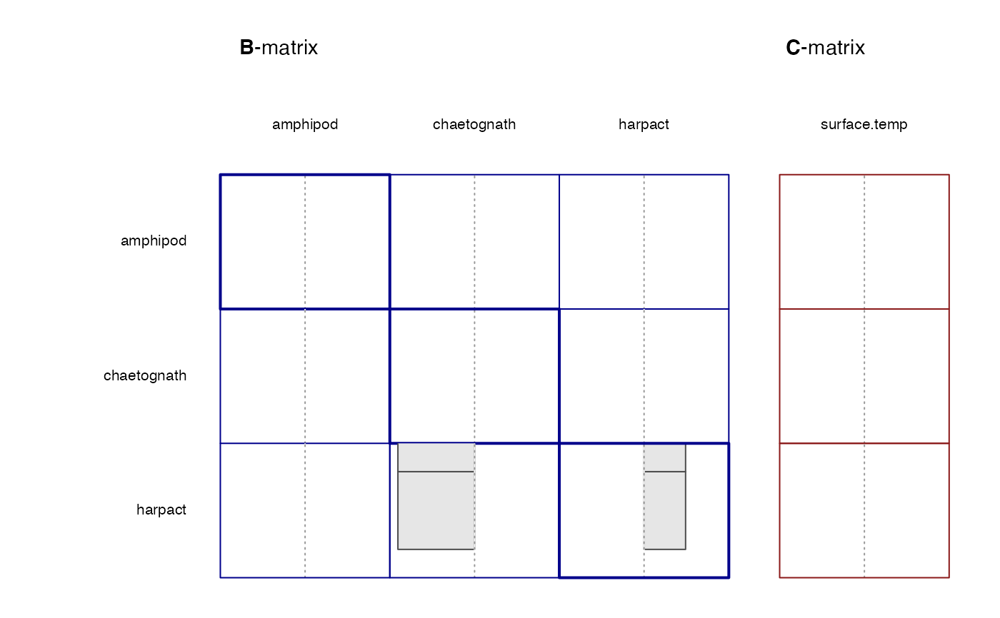

Plot coefficients of a MAR model
plot.MAR.RdPlots the coefficients contained in an object of class MAR resulting from a call to run.mar
Usage
# S3 method for MAR
plot(x, y=NULL, ..., legend=FALSE)Arguments
- x
Object of class
MARto be plotted- y
Optional additional object of class
MARto be compared tox.- ...
Not used.
- legend
Should a legend be generated? If set to TRUE, an additional graphics device containing the legend will be generated
Details
The B- and C-matrix coefficients of the best-fit model are plotted as a grid of bar graphs. If bootstrapping was performed, discarded best-fit coefficients are faded. If any restrictions were set on interactions, red and green points at the base of bars are indicative of exclusion and inclusion, respectively.
Value
A graphics device containing the coefficient plot, and, if legend=TRUE, an additional device containing the corresponding legend
Examples
data(L4.mar)
myvar <- c(0, 0, 0, 1, 1, 0, 0, 0, 0, 0, 0, 0, 0, 1, 0, 0, 0, 0, 0, 0, 2)
myres <- matrix(0.5,
nrow = length(which(myvar == 1)),
ncol = length(which(myvar != 0))
)
small <- L4.mar[1:50,]
run1 <- run.mar(small, variables = myvar, restrictions = myres, search = "random", boot = FALSE)
#>
#>
#> searching for best-fit model...
#> ...BEST-FIT MODEL SELECTED
#> ( search time: 0 minutes 5 seconds )
#>
#>
#>
#> identifying 10 lowest AIC models...
#> ...TOP MODELS RETAINED
#>
#> ════════════════════════════════════════════════════════════════════════════════
#>
#>
plot(run1)
